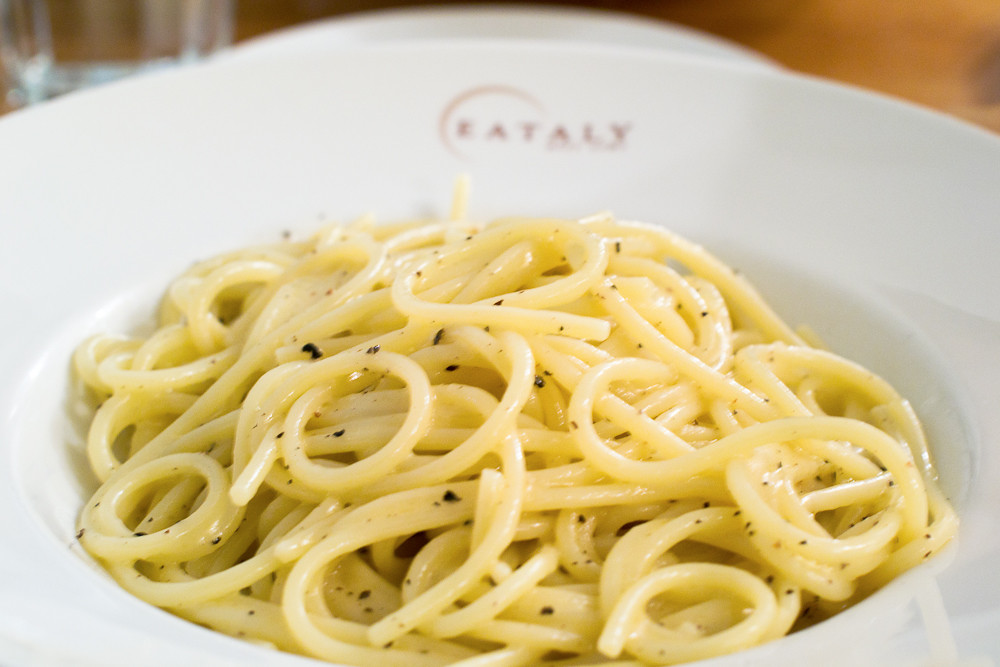

Buttered Noodles
Back to Home Page

Description
Buttered noodles are simple to make with your favorite pasta,
butter, Parmesan cheese, salt, and pepper for a quick and
easy, kid-friendly dish. Fresh herbs and a little lemon juice
could be added to amp up the flavor.
Ingredients
- 1 (16 ounce) package of fettucine noodles
- 6 tablespoons butter, cut into pieces
- 1/3 cup grated Parmesan cheese
- Salt and ground black pepper to taste
Steps
- Gather all ingredients
- Fill a large pot with lightly salted water and bring to a rolling boil
- Stir in fettucine, bring back to a boil, and cook pasta
over medium heat until tender yet firm to bite, 8 to 10 minutes
- Drain and return pasta to pot. Mix butter, Parmesan cheese, salt, and pepper
into pasta until evenly combined.
- Serve hot and enjoy!